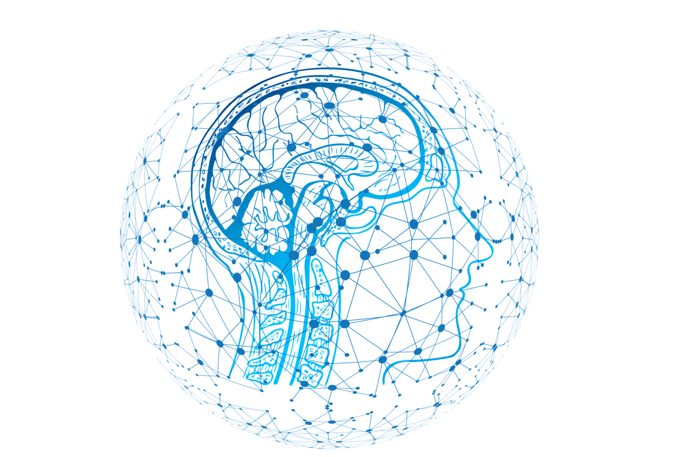

Nguyễn Anh Bằng
Personal Detail
Gender: Male
D.O.B: July 30, 1998
Adress: An Giang Province
Phone Number: 0353557412
Email: bang98.2016@gmail.com
D.O.B: July 30, 1998
Adress: An Giang Province
Phone Number: 0353557412
Email: bang98.2016@gmail.com
Education

Sep 2016 – present Can Tho University
Major : Information
Technology GPA : 2.98 / 4.00
Major : Information
Technology GPA : 2.98 / 4.00
Fields of Interest

- Machine Learning
- IoT
Experience
April 2019 – August 2019
Science research project: Sharing bicycle system in Can Tho University campus – Team project
Tech stacks: NodeJS, Java, C, Sequelize, Google map API
Built a web service using RESTFul API to manage the system. Generate a lock model by 3D printing. Automatically unlock the bike lock via android application.
Jan 2019 – May 2019
Fundamental project: Automatic retractable awning system
Tech stacks: C/C++, Java
Hardware including: rain sensor, 2 DC motor, L298N module, esp8266.
Make a system that allows user to retract awning in two ways: automatically retract via data from rain sensor and manually retract by android mobile
Science research project: Sharing bicycle system in Can Tho University campus – Team project
Tech stacks: NodeJS, Java, C, Sequelize, Google map API
Built a web service using RESTFul API to manage the system. Generate a lock model by 3D printing. Automatically unlock the bike lock via android application.
Jan 2019 – May 2019
Fundamental project: Automatic retractable awning system
Tech stacks: C/C++, Java
Hardware including: rain sensor, 2 DC motor, L298N module, esp8266.
Make a system that allows user to retract awning in two ways: automatically retract via data from rain sensor and manually retract by android mobile
Skill
- Programming Language: C, Java, Javascript
- Framework: NodeJS, Bootstrap
- Soft skills: Teamwork, presentation skill, Self-Study skill
References
MsC. Nguyen Ngoc My
Lecturer at Information Technology Department, Can Tho University
Email: nnmy@cit.ctu.edu.vn
Lecturer at Information Technology Department, Can Tho University
Email: nnmy@cit.ctu.edu.vn